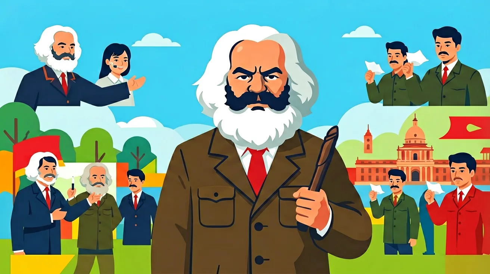
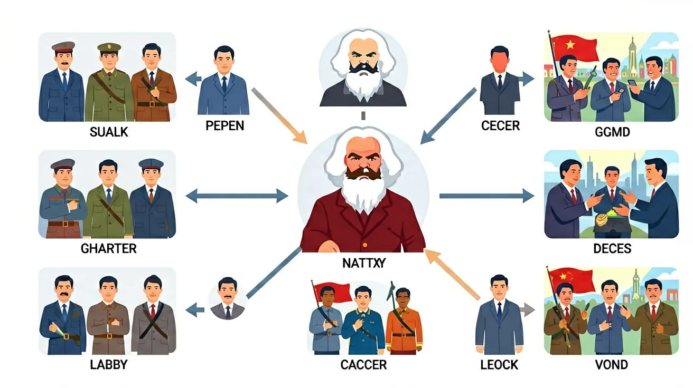

先独立作答，再点选项查看对错与错因。
列宁提出的"四月提纲"主要内容是什么？
布尔什维克党在1917年10月革命中主要依靠的力量是？
马克思主义在俄国实践中的最大特点是？
列宁提出的革命理论强调在____薄弱环节首先取得突破
答案：帝国主义链条
这是列宁对马克思主义的重要发展
1917年二月革命后，俄国出现了____和临时政府并存的局面
答案：苏维埃
这是俄国独特的政治现象
下列哪项最能体现马克思主义在俄国的本土化？
分析马克思主义理论在俄国革命中的具体实践及其特点
❓ 为啥马克思一个德国人的理论能在俄国火起来？
❓ 十月革命和二月革命到底有啥区别？
❓ 苏联解体是不是说明马克思主义失败了？
学完这一课，这些问题你都能自信地回答。
你已经学过工业革命，具备继续探索的底座；在日常生活中，你也早就接触过与「马克思主义与俄国革命」相关的现象。
但当问题换了一个情境出现——需要你解释原因、做出判断或解决实际任务时，仅凭零散的旧知识就很容易卡住。
所以本课用一个贯穿的情境任务，带你把「马克思主义与俄国革命」拆成可操作的步骤：先看懂它，再动手试，最后用练习和迁移把它变成自己的能力。
🎯 能说出马克思主义在俄国传播的3个历史条件
🎯 能判断十月革命与二月革命的根本性质差异
🎯 能分析列宁对马克思主义理论的创新点
从经济基础（农奴制残余）、阶级矛盾（工人与沙皇）、国际环境（一战）三要素拆解
列宁将马克思主义本土化为‘帝国主义薄弱环节突破论’
对比巴黎公社（自发）与十月革命（政党领导）的组织形态差异
观察革命海报中的锤子镰刀符号如何取代沙皇双头鹰
思考‘工农联盟’思想对当代中国乡村振兴的启示
✅ 列宁提出‘社会主义可能在一国首先胜利’的创新理论
💡 混淆理论普遍性与实践特殊性
✅ 社会主义实践受多重因素影响，需区分理论与现实
💡 简单因果归因
口诀：经济基础定上层，列宁创新破坚冰
类比：像网购要先有手机（生产力）、快递（组织）、促销需求（矛盾）
马克思主义在俄国传播的关键历史条件是？
二月革命与十月革命的根本区别是？
（真题）列宁对马克思主义理论的突出创新是？
（迁移）若分析某国革命条件，最应优先考察？
（综合）最能体现马克思主义俄国化的是？

